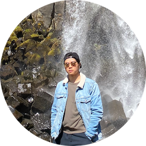

I'm Will.
a programmer.



Hello.
I am a curious individual who loves slithering through the trails of data with 🐍.
I also enjoy sipping puns and a good Americano ☕️.
This is the sort of things
I like to do.

Alchemy: Turning Rocks into Diamonds
Majority of my skills revolve highly around harnessing healthcare data to generate exploratory insights and data driven decisions to wholistically better one's health.
But I also like to do other things with the snake of all trades.
Hot Keys: Sticky Situation
Arguably my best skill is taking down spice.
Nothing gets a grown man to debug faster than a hot wings challenge while coding!
Get In Touch
I can make you lactose intolerant with my 🧀 puns.
Feel free to shoot me an email here and let's connect!.
CONTACT ME